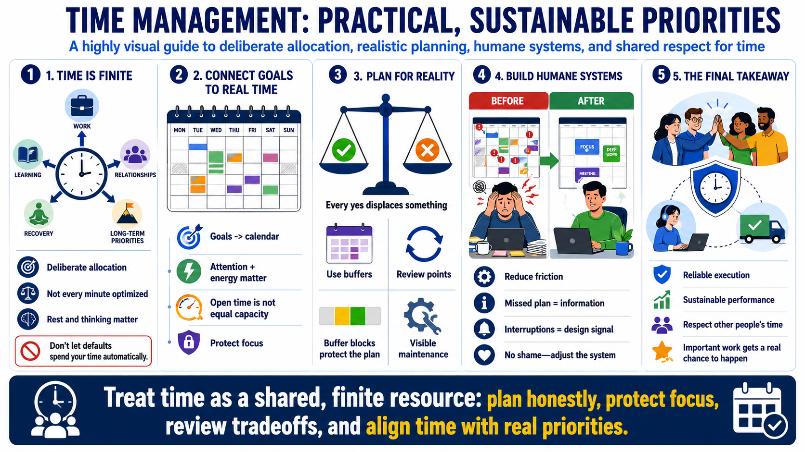

Course Summary and Key Takeaways
Connecting to LMS... Progress: in progress

Narration
Time is a finite resource that must be allocated deliberately across work, learning, relationships, recovery, and long-term priorities. The point is not to optimize every minute or turn life into a spreadsheet. The point is to stop letting defaults spend the most limited resource without review. A deliberate allocation can still include rest, family, maintenance, unstructured time, and space to think.
Strong time management connects goals to calendars and routines. It accounts for attention and energy, not just open slots. It recognizes opportunity cost, because every yes displaces something else. It plans with uncertainty by using estimates, buffers, review points, and visible maintenance. It protects boundaries so focus, recovery, and non-work commitments do not depend entirely on leftover capacity.
The best systems are practical and humane. They make commitments visible, reduce unnecessary friction, and help people choose deliberately when conditions change. They also avoid shame. A missed plan is information. An overloaded calendar is a signal. A recurring interruption is a design problem to investigate. Time management improves when people treat these signals as data rather than proof of personal failure.
The final takeaway is simple: use time in a way that supports reliable execution, sustainable performance, and a life that matches actual priorities. That requires tradeoffs, review, and honest capacity planning. It also requires respect for other people's time. When time is treated as a shared resource, teams make better commitments, individuals protect better focus, and important work has a real chance to happen.